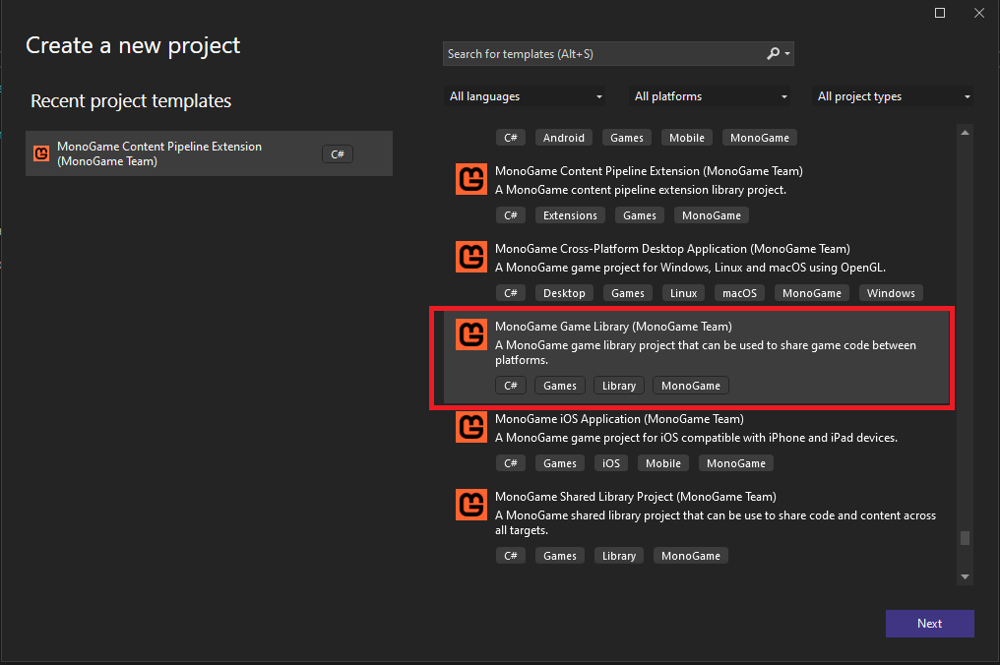
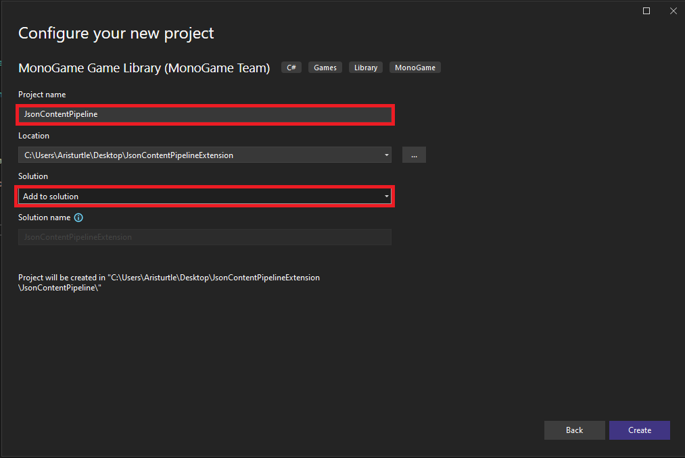
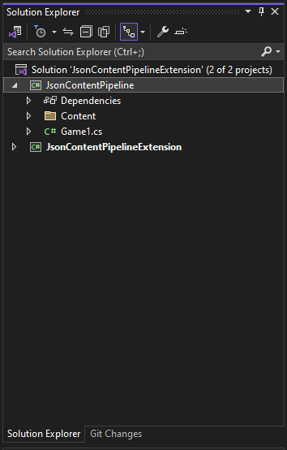

Create a MonoGame Game Library
For the next part of this tutorial, we will need to create a new MonoGame Game Library project and add it to our solution.
A MonoGame Game Library project is just a C# Class Library project that comes pre-configured with the necessary NuGets used to reference MonoGame types, as well as a few other directories and files that make it simple to create a library of reusable code between your various MonoGame projects.
Why Create the ContentTypeReader In A Separate Project?
One of the biggest reasons we are going to create the MonoGame Game Library project to put our ContentTypeReader in, instead of our MonoGame Content Pipeline Extension project is because the extension project doesn't need to know about or reference the ContentTypeReader itself. By keeping them in separate projects, our game project will only need to reference the MonoGame Game Library project we make since it will need a reference to the ContentTypeReader and this means we don't have to reference the extension project which would include all of it's third party dependencies in the build for our game.
Create A New MonoGame Game Library
To create a new MonoGame Game Library project and add it to our solution, click File -> New -> Project from the top menu in Visual Studio. This will open the Add new project window. From here, locate the MonoGame Game Library project template and select it.

In the Configure your new project windows, name the project JsonContentPipeline. If you are given the drop-down choice of creating a new solution or adding to the existing solution choose the Add to Solution option.

Once this is completed, you should now have the new JsonContentPipeline project added to your solution in the Solution Explorer panel like so with the following files already created:

Note
For Visual Studio Code users, you can create a new **MonoGame Game Library project by using the following dotnet cli command
dotnet new mglib -n JsonContentPipeline
Typically when making a MonoGame Game Library project, we can make use of the provided /Content/ directory and the Game1.cs file provided. However for our content pipeline extension, these are not going to be needed. So delete both the /Content/ directory and the Game1.cs file.
Next add a new Class File to the project named JsonContentTypeReader. Then replace the code in this file with the following.
using Microsoft.Xna.Framework.Content;
using System;
namespace JsonContentPipeline
{
public class JsonContentTypeReader<T> : ContentTypeReader<T>
{
protected override T Read(ContentReader input, T existingInstance)
{
return default(T);
}
}
}
Next Steps
That's it for this step. We have now created our MonoGame Game Library project and added the base template for our JsonContentTypeReader file. On the next page, we'll dig into the anatomy of a ContentTypeReader class to get an understanding of it before making the edits needed for it to actually read the JSON content.